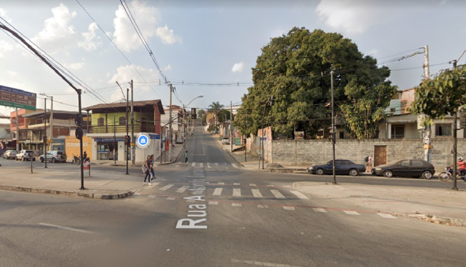

Somente em Belo Horizonte são 18 zonas eleitorais que contêm 4.586 seções. De acordo com a Justiça Eleitoral, 1.943.184 eleitores podem ir às urnas escolher o prefeito e os 41 vereadores que assumem a partir de janeiro de 2021.
Nos bairros da Regional Norte a 39ª Zona Eleitoral concentra o maior número eleitores, 121.007 sendo que 11,11% (13.445 pessoas) tem a idade entre 40 e 44 anos seguida com número bem próxima, 13.302, estão os eleitores na faixa etária de 35 e 39 anos. O gráfico no site do Tribunal Superior Eleitoral (TSE) traz quantitativos da identidade de gênero (masculino, feminino ou não informado) declarada pelos eleitores ao se cadastrarem ou atualizarem suas informações de cadastro na Justiça Eleitoral: gêneros femininos são 66.641 que representam 54,2%; masculino 55.321 que equivale 45,7% e não declarados são 0,037% que representam no quantitativo 45 pessoas.
Os bairros Guarani, Novo Aarão Reis, São Gonçalo, Minaslândia, Providência e Primeiro de Maio pertencem à 331ª Zona Eleitoral. Já o São Bernardo, São Tomaz e Vila Aeroporto estão na 32ª Zona Eleitoral.

A Prefeitura de Belo Horizonte interditou um lava-jato que funciona como bar com show de pagode ao vivo, no bairro Tupi, na Região Norte de Belo Horizonte, na noite deste domingo (21). De acordo com a administração municipal, fiscais de Controle Urbanístico e Ambiental estiveram no local por volta das 21h, e o estabelecimento foi interditado por descumprimento dos decretos da Covid-19.
Pelas redes sociais, o espaço anunciou uma festa a partir das 16h, com shows de dois artistas de pagode. “Respeitando todas as normas, aqui você pode curtir com tranquilidade”, anunciou o lava-jato. Entretanto, conforme a autarquia municipal, as normas não estavam sendo cumpridas. Além de restringir o número de clientes conforme a capacidade do local, o estabelecimento também deve seguir uma série de regras para apresentações de música ao vivo.
Ainda de acordo com uma portaria publicada no dia 19 de setembro, deve haver barreira física entre artistas e público, não pode haver dança durante a apresentação e os músicos não podem circular entre o público.